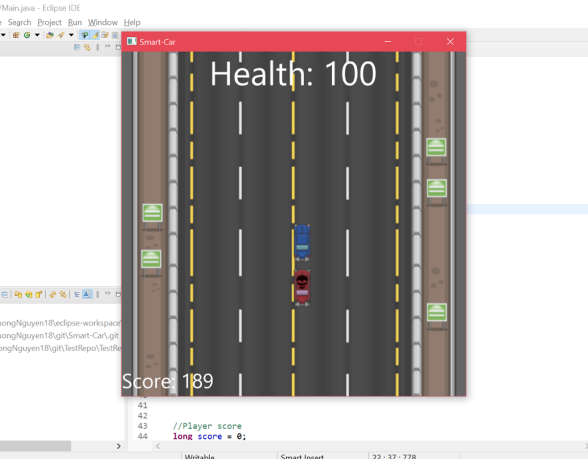
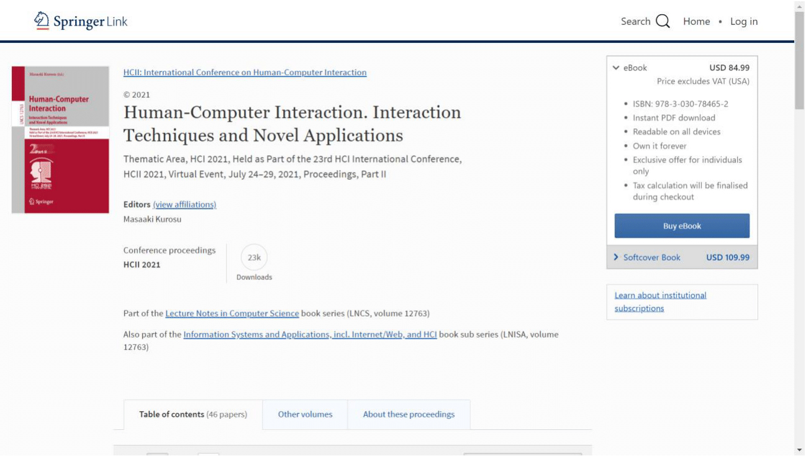
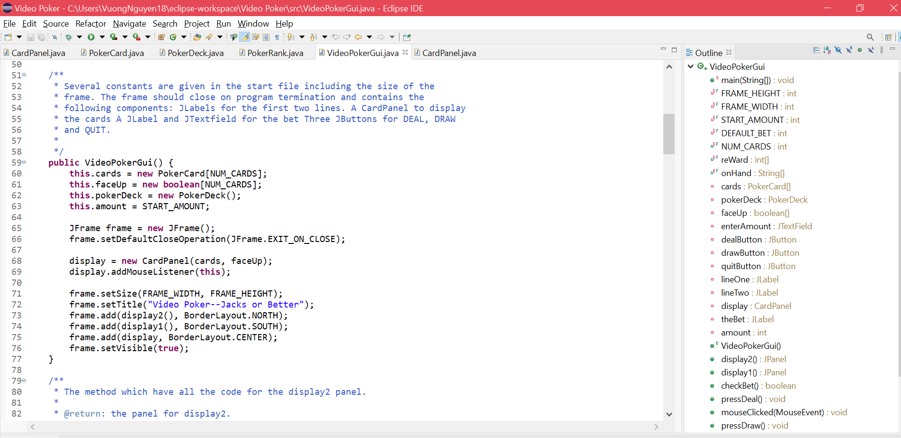

This is the group project called "Smart-Car" where we use Java and JavaFX to create
a game in which the player will control the blue car and be chased by
an enemy car, the target of the game is to get a high score.
You will control your car by using "W" to go forward, "A" to go left,
"D" to go right, "S" to go backward. Every time you hit the left side
and right side of the sidewalk, you will be lost 20 health, if you hit
a car on the road then you will lose 10 health. The pattern of the enemy
car will be random, if the enemy car hits you, you will not be able to
control your car. The health box will appear randomly on the road and
it will increase your health by 20.
This is the group paper in which we research the horographic laser
keyboard: how it was invented, what kind of device does it need to work,
how it works, and the efficiency when compared to a normal keyboard.
With the help of our professor
Dr. Tauheed Khan Mohd,
we submit our paper to HCII: International Conference on Human-Computer Interaction, our paper
gets accepted and is published in the book: "Human-Computer Interaction. Interaction Techniques and Novel Applications"
with the title "Performance Evaluation and Efficiency of Laser Holographic Peripherals" from page 3 to page 16.


This is my first big project where I use Java and GUI (Graphic User Interface) to create a table of poker games.
The rules and the game follows the real game where the player receives his/her card and he/she can either choose
"DEAL", "DRAW", or "QUIT". The amount of money for the player will be decided by the user and the player can choose
how much money they want to bet. The program will show how much money that you make or lose after every game and
when the player has no money left, it will show a display that says "You're out of money !".